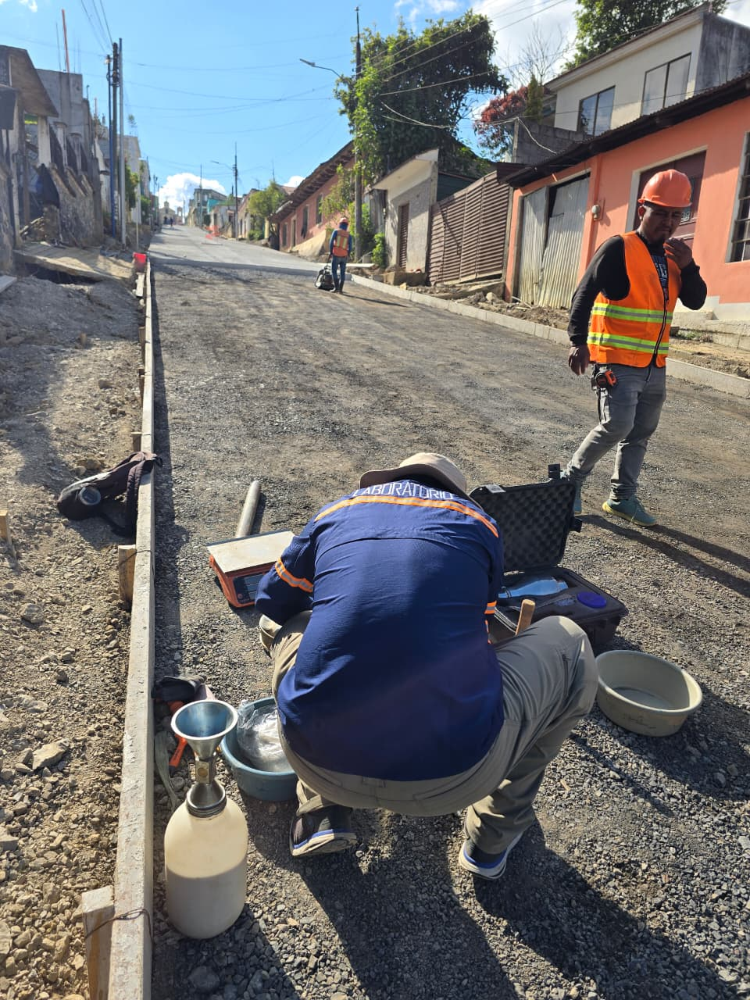
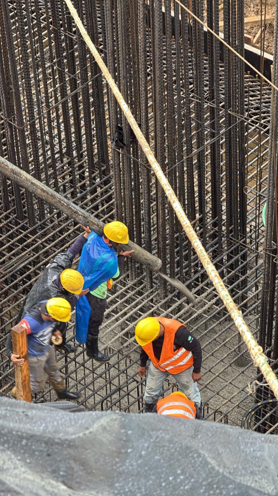
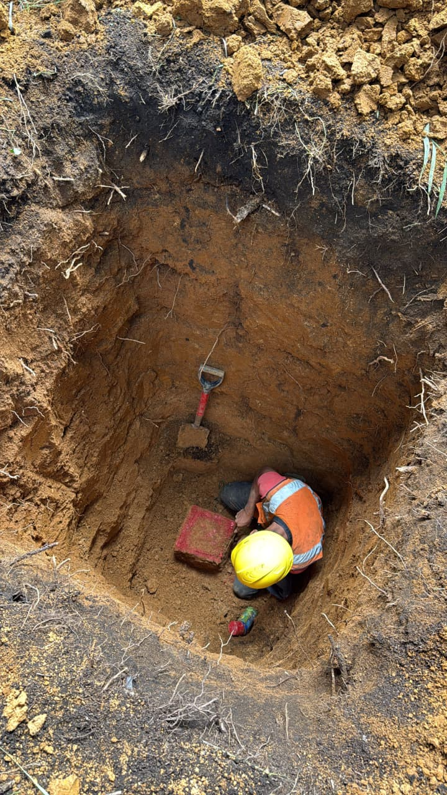
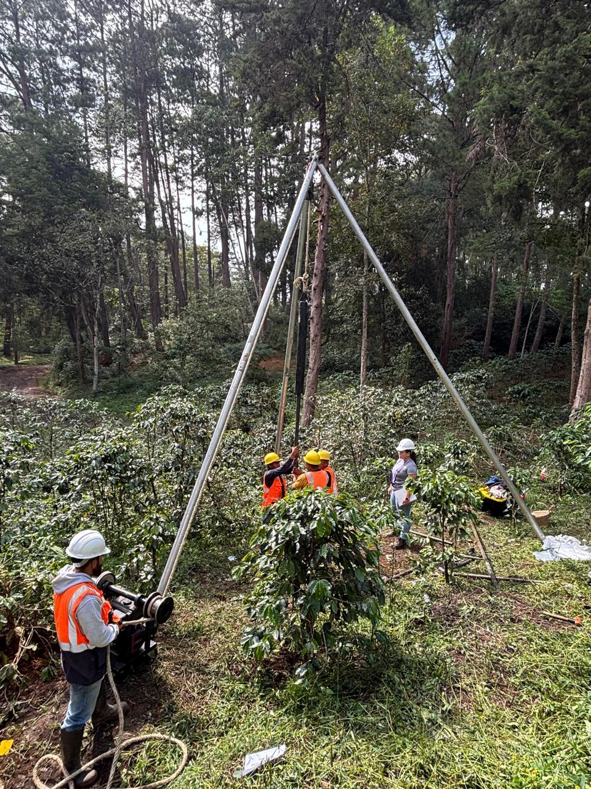
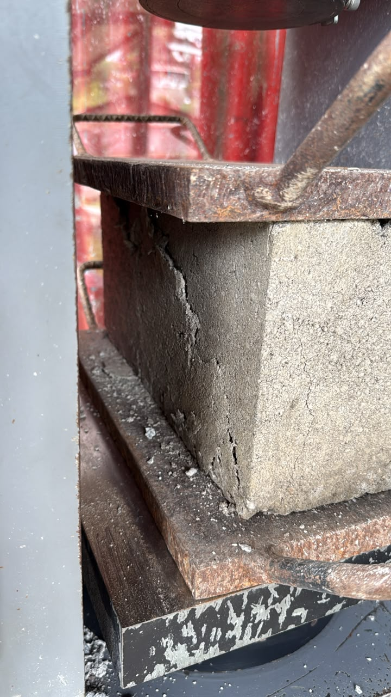
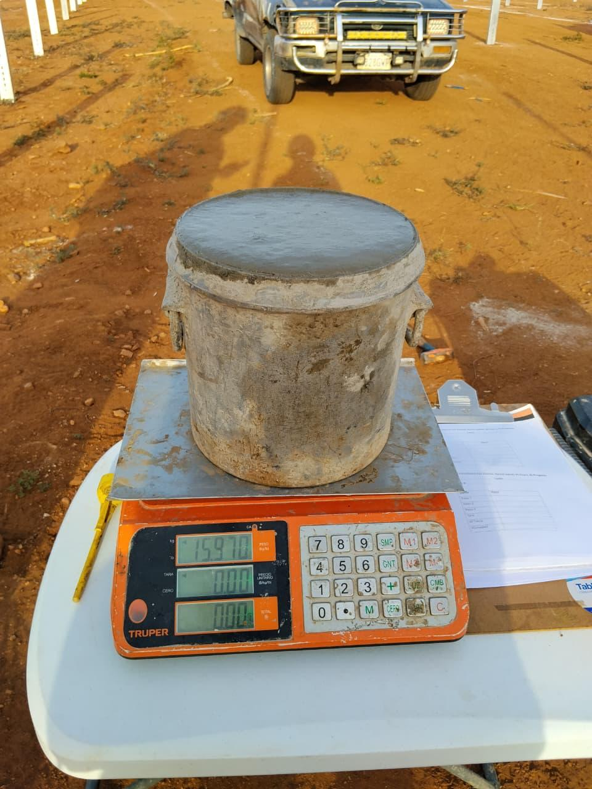

Respaldo técnico en infraestructura vial, edificaciones civiles y cimentaciones complejas a nivel nacional.

Verificación sistemática de compactación en capas de sub-base y base granular para asegurar la vida útil de pavimentos frente al tránsito pesado.
• Ensayos Proctor Modificado y CBR
• Densidades de campo con Cono de Arena

Monitoreo directo a pie de obra en fundiciones continuas para validar trabajabilidad, temperatura de colado y toma de testigos cilíndricos.
• Asentamiento (Slump) y temperatura
• Compresión a 7, 14 y 28 días (ASTM C 39)

Excavación y registro visual del subsuelo con extracción de muestras inalteradas cúbicas para determinación de parámetros de cohesión y fricción.
• Corte Directo consolidado y rápido
• Límites de consistencia y clasificación USCS

Determinación de la compacidad relativa y capacidad de carga admisible en terrenos destinados a infraestructura pública, puentes y naves industriales.
• Conteo de golpes N-SPT por estrato
• Informe para cálculo de cimentación profunda

Ensayos destructivos controlados en laboratorio para certificar la resistencia a compresión y absorción hídrica en unidades huecas de concreto.
• Resistencia a compresión en bloque
• Evaluación geométrica y absorción de agua

Comprobación del comportamiento reológico en elementos densamente armados mediante ensayos de escurrimiento sin segregación de agregados.
• Ensayo de flujo y estabilidad visual
• Control de granulometría en agregados
Cada muestra recolectada sigue una cadena de custodia estricta que respalda legal y estructuralmente las decisiones de supervisores y residentes.
Toma representativa en campo bajo normativas ASTM y AASHTO con instrumental calibrado y personal acreditado.
Fase Inicial en Obra
Procesamiento con prensas hidráulicas, tamices normalizados y control riguroso de humedad, temperatura y curado.
Fase Analítica
Emisión de informe técnico claro con curvas granulométricas, resistencias y conclusiones directas para la bitácora.
Fase Documental
Cuéntanos la ubicación y tipo de obra para coordinar la logística de toma de muestras o cotizar un paquete completo de ensayos.